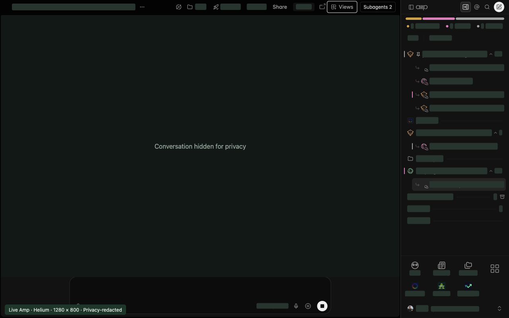
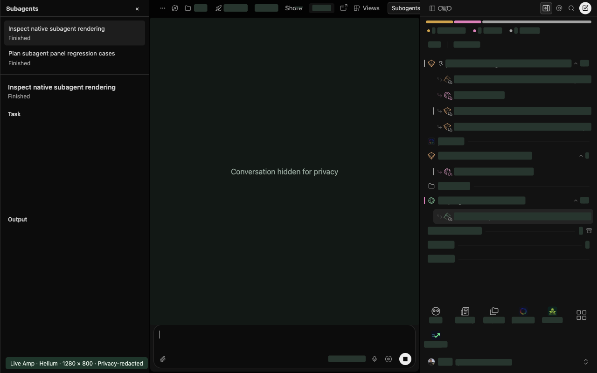

Keep tools opposite navigation.
Files, Changes, Terminal, Desktop, and Portal move left in right-sidebar mode. Their dividers resize in the direction you drag.
A few better defaults for the way you work. Move navigation to the right, make room for your threads, and give subagents a place of their own.
Install locallyFree, open source. For Amp in desktop Chrome.
Not on the Chrome Web Store yet.
Same Amp. A different point of view.
Navigation on one side. Agent output on the other. Your conversation in the middle.
Everything in its place. Ready when you are.
Keep the parts you like. Every feature has its own switch in extension Options.
The sidebar starts on the right. Click the pinned extension icon to switch to the left. Its R/L badge tells you which side is saved.
In right mode, drag the divider to set your width. Double-click to restore Amp's width. Your choice stays put across tabs and browser restarts.

When your conversation has subagent activity, open Subagents in the conversation header. Pick an agent to read its task and output in a dedicated panel opposite navigation.
Keep Files and Changes alongside it. On narrower desktop windows, the panel becomes a drawer. Close it, press Escape inside it, or choose View original to return to inline activity.

Files, Changes, Terminal, Desktop, and Portal move left in right-sidebar mode. Their dividers resize in the direction you drag.
Hide the desktop sidebar's bottom section, including shortcuts and the account row. It's visible by default and easy to restore in Options.
The sidebar header switch turns all extension behavior off without forgetting your preferences. Turn it on to get your layout back.
The Web Store release is in preparation. For now, load the open-source extension locally in Chrome.
Download source ZIPDownloads the repository's main branch from GitHub.
No build step needed.
Unzip the source into a permanent folder. Inside it, find the amp-sidebar-right-main folder containing manifest.json. Keep that folder; Chrome loads the extension from it.
Type chrome://extensions into Chrome's address bar. Enable Developer mode, click Load unpacked, and select the folder containing manifest.json, not the ZIP. Keep Developer mode on. Chrome may show a developer-mode warning.
Pin amp better defaults from Chrome's Extensions menu. Refresh existing Amp tabs, then click the pinned icon to switch sides. Right-click the icon and choose Options to customize each feature.
Just a local extension.
Your Amp account stays yours.
No. This is an independent, MIT-licensed project. It is not affiliated with or endorsed by Amp. The Amp name identifies the service it works with.
The extension needs local storage and access to ampcode.com only. Chrome may describe that access as reading and changing site data. Only nine layout and feature preferences are saved in your local Chrome profile, not synced between devices. The subagent panel expands Amp's native subagent disclosures as needed and reads rendered agent titles, statuses, tasks, results, and errors into memory for the current thread. It does not save or transmit that content. The extension makes no network requests and has no analytics.
Read the full privacy policyNo. Use Amp in desktop Chrome or a Chrome-installed PWA. Chrome extensions cannot modify the separate native Amp app. Below 768px, Amp's mobile layout is unchanged.
Right-click the extension's toolbar icon and choose Options. Each feature has a checkbox. Turn off Enable extension behavior to restore the native layout immediately while keeping your preferences. After disabling or removing the extension in Chrome, refresh open Amp tabs to clear its existing changes.
Amp's page structure isn't a public API. A site update may require an extension update. Turn off extension behavior in Options if something looks wrong, and report the issue on GitHub. Local installs need to be updated manually by replacing the source files and clicking Reload in Chrome's extensions page.
Report a compatibility issueYour next thread can feel a little more like you.